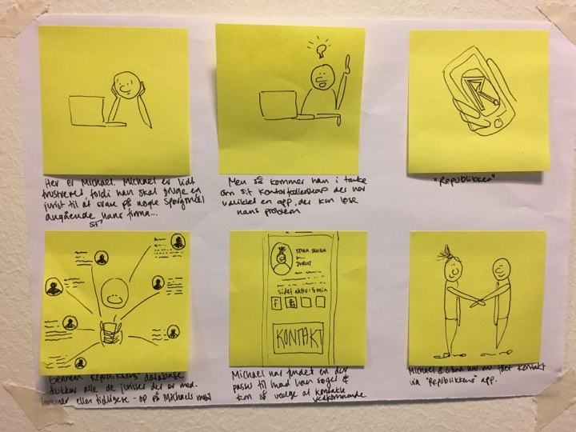

KONTAKT

- AUGUSTA BONDO
- augustabondo@gmail.com
- tlf: 60762475
- MICHALA ROSE
- michalarose@hotmail.com
- tlf: 40616223
- MAGNUS KVOLBÆK
- magnuskeol@hotmail.com
- tlf: 53603150

- RIKKE VESTERGAARD
- rikke.vestergaard@gmail.com
- tlf: 50737734

- MATHILDE PEDERSEN
- mathilde-up@hotmail.com
- tlf: 31773405
DAILY SCRUM
SCRUM VIDEO 06/12/2017
SCRUM VIDEO 08/12/2017
SCRUM VIDEO 11/12/2017
SCRUM VIDEO 12/12/2017
SCRUM VIDEO 13/12/2017
Refleksion: I dette forløb har vi næsten formået at afholde et scrum møde- samt optage en scrum video hver dag. Vi har været ramt af en række udfordringer, såsom sygdom. derudover har der været en tendens til, at flere af gruppens medlemmer har haft svært ved at overholde mødeplanen.
SPØRGEGUIDE OG INTERVIEWNOTER
BRUGERUNDERSØGELSE
BRUGERUNDERSØGELSE - REPUBLIKKEN
BRUGERUNDERSØGELSE - VIKTOR

PERSONA
Navn: Anne Petersen
Alder: 29 år
Bopael: Gentofte
Beskaeftigelse: Coach, privat kontor hos Republikken
Beskrivelse: Anne bor i Gentofte i en villalejlighed. Hun er uddannet coach, og hun guider bl.a. mange nyuddannede i den rigtige retning for netop dem. Anne benytter sit kontor hos Republikken til både dagligdagens kontorarbejde og til coaching af sine klienter. Anne ønsker mere overblik over, hvad mulighederne er for networking er inden for kontorfællesskabet, da det lige nu er for uoverskueligt til, at hun benytter sig af det i særlig høj grad.
Navn: Michael Johansen
Alder: 32 år
Bopael: Vesterbro, København
Beskaeftigelse: Freelancer, programmør
Beskrivelse: Michael bor med sin kone og deres barn på 2 år på Vesterbro. Han er uddannet programmør, og han har, siden han blev færdiguddannet i 2011, været freelancer, hvor han både har programmeret hjemmesider og diverse apps. Michael bruger Republikkens lokaler til at sidde og arbejde i, når arbejdet ikke foregår hjemme. Han benytter sig desuden af mulighederne for networking via kontorfællesskabet, men han mangler overblik over, hvad og hvor mange mulighederne egentlig er.
EXPERIENCE MAP
IDEER
WORKTIME
Pain point: Republikken mangler et sparringsforum, hvori der er en oversigt over medlemmer og deres kompetencer
Aktiviteter:
Download app, Opret bruger/log ind, Tjek ind/tjek ud, Se oversigt over arbejdstid. .
Features:
Indtaste oplysninger, tjek ind/tjek ud, se oversigt over arbejdstid
R COMMUNITY

Pain point: Republikken mangler et sparringsforum, hvori der er en oversigt over medlemmer og deres kompetencer
Aktiviteter:
Download app, Vælg mellem dansk og engelsk, Log ind (Republikken medlemskab - med mail eller eller brugernavn), Søg efter tags (for evt at finde hjælp), Se andres profiler, Skriv med andre medlemmer, Mulighed for at tilføje tags, og beskrivelse til egen profil.
Features:
Hjemmeskærm: Mulighed for at søge tags, Kom til egen profil, Kom til database, Se beskeder.
Egen profil: Mulighed for at tilføje tags, Mulighed for at tilføje noget i beskrivelsen.
Profiler: Skriv besked til vedkommende, Se forskellige sociale medier (facebook, instagram, mm.), Se om vedkommende er aktiv (beacon).
Database: Oversigt og enkelte personer (evt oversigt efter søgt tag)
ARGUMENTER FOR VALG AF IDE/ PAPER PROTOTYPE
Vi har valgt ide 2 - R Community. Vi valgte at benytte benchmarking til at fastslå, hvilken ide der var bedst ud fra henholdsvis målgruppens størrelse, skalerbarhed, værdien for virksomheden, værdien for målgruppe, realiserbarhed og konkurrence.
Refleksion: Vi har haft yderligere to ideer - som vi dog ikke valgte at lave paper prototype af, da vi tidsmæssigt ikke kunne nå det.
FORRETNINGSMODEL
IKON FOR APP
OVERVEJELSE AF DET GRAFISKE DESIGN
Vi ønsker at opnå funktionalitet, simplicitet og et minimalistisk udtryk for vores app 'R community'. Vi finder vores inspirationskilde i det skandinaviskedesign - som altid har formet at fusionere "the art of simplicity" og funktionalitet. Vi går derfor efter princippet 'Less is more' og ønsker at inkorporere 'hygge' og varme i vores design.
Gestaltlovene sørger for at vores design og funktionalitet går hånd i hånd, i stedet for at modarbejde hinanden. Det øger brugervenligheden og hjælper brugeren med at fokusere på vores apps indhold.
Vi bruger firkanter, cirkler og rektangler til vores knap-design.
Vi arbejder med blot med fonten - Lato. Dette bevirker, at vores design fremstår så enkelt som muligt, og derved fastholde folks fokus på det egentlige formål.
STYLETILE OG MOODBOARD